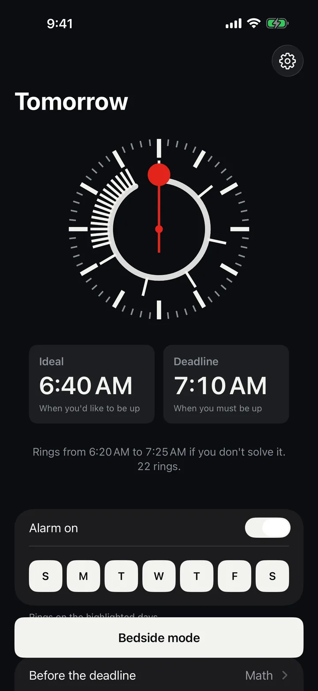
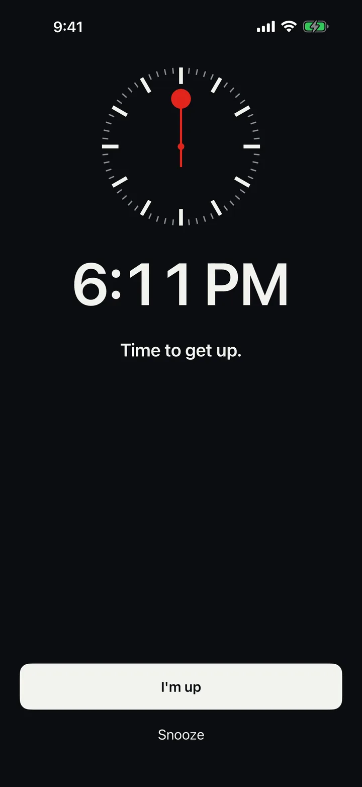
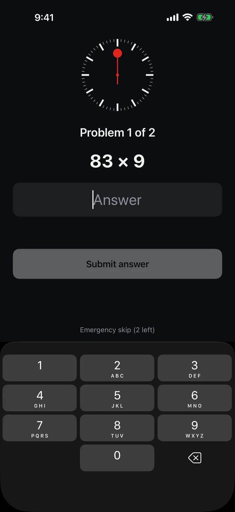
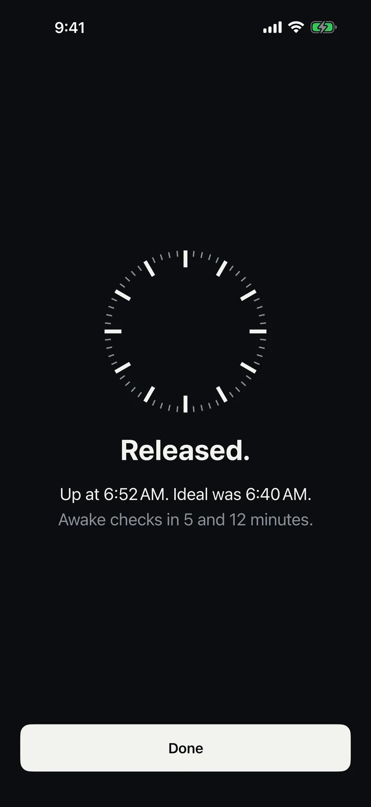
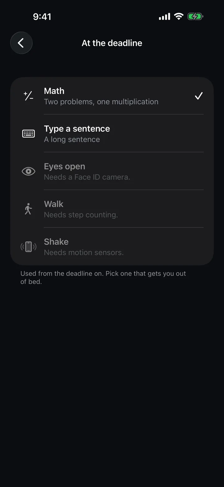

1 Nudges you first
Two soft nudges, 20 and 10 minutes before Ideal.

Free for iPhoneiOS 26.2 or later
Set when you'd like to be up and when you have to be. From the deadline it rings every minute until you solve a challenge.
Ideal is when you'd like to be up. Deadline is when you have to be.
Two soft nudges, 20 and 10 minutes before Ideal.

Stop snoozes for 9 minutes, or start the challenge and be done.

It rings every minute and Stop no longer works.

A quick check 5 and 12 minutes after you solve.

Pick one for before the deadline and one for at the deadline. Later rings ask for a little more.

Wakelatch uses Apple's alarm system, so it rings through silent mode and Focus, on your Apple Watch too, and even after the phone restarts. Leave it open on the charger and Bedside mode rings full screen with its own sound.
Use an emergency skip. You get two a month, and each one asks you to type a long phrase.
Before the deadline, yes: Stop snoozes for 9 minutes by default. From the deadline, Stop no longer works.
Yes. No app can block that, and Wakelatch doesn't try to.
Nothing. Wakelatch is free and open source under the MIT license.
Nothing. There are no ads, accounts, analytics or network code. Read the privacy policy.